資料分析
第十章：位置尺度與座標軸
實踐大學
2026-06-06
位置尺度與座標軸
概覽
ggplot2 產生的每一張圖都仰賴位置尺度（position scales），把資料值映射到繪圖表面上的實際位置。x 與 y 美學各自都有一個相關聯的位置尺度，即使使用者沒有明確宣告它們。
考慮這個最簡的直方圖規格：
y 美學從未被提及，但圖仍正確呈現，因為 geom_histogram() 在內部計算了一個 count 變數並把它映射到 y。完全明確的等價寫法是：
由於位置尺度出現在每一張圖中，透徹理解它們的運作方式——以及如何被客製化——對於有效的資料視覺化至關重要。
本章組織成四個主要章節：
- §10.1——數值（連續）位置尺度：範圍界限、縮放、擴展、刻度、次刻度、標籤與轉換
- §10.2——日期時間位置尺度：專門的刻度與標籤格式
- §10.3——離散位置尺度：重新排序、自訂標籤與軸指引
- §10.4——分箱位置尺度：把連續變數切成離散的箱
數值位置尺度
數值位置尺度
預設的連續位置尺度 scale_x_continuous() 與 scale_y_continuous()，建立了一個從原始資料值到繪圖面板上像素座標的線性映射。
一族便利包裝函式——scale_x_log10()、scale_x_reverse()、scale_x_sqrt() 及其 y 軸對應——提供對最常需要之轉換的快速存取（在 §10.1.7 完整說明）。
所有連續位置尺度的基本行為都由六個關鍵引數支配：
| 引數 | 用途 |
|---|---|
limits |
定義尺度的範圍 |
expand |
在資料之外加上填補 |
breaks |
設定主刻度的位置 |
minor_breaks |
設定次刻度的位置 |
labels |
控制刻度標籤文字 |
trans |
套用一個數學轉換 |
範圍界限
limits 引數控制連續尺度被定義的範圍。預設情況下，ggplot2 自動從資料範圍推導出界限，但在跨多張圖比較時，往往需要手動指定。
沒有明確的界限，每張圖都使用自己的自然資料範圍，使並排比較不可靠。
要同步座標軸，在每個尺度中傳一個長度為 2 的數值向量給 limits。如果你只想限制一端，用 NA 作為佔位：
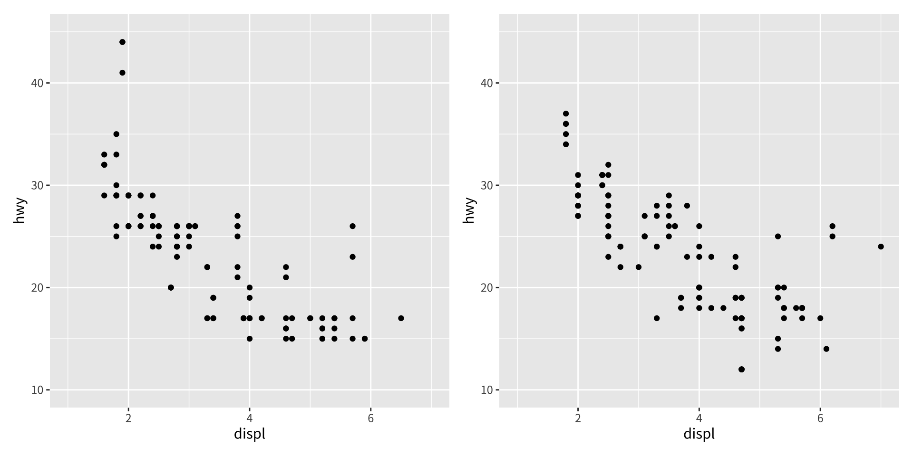
lims() 便利函式在同時為多個美學設定界限時減少冗長：

lims() 遵循與 labs() 相同的名稱–值語法：引數名稱指定美學，而值指定其界限。單軸的輔助函式 xlim() 與 ylim() 也可用於快速調整。
放大
縮窄尺度的 limits 並不等同於視覺上的放大。當一個資料值落在連續尺度所宣告的界限之外時，ggplot2 會在計算統計摘要之前把它轉換成 NA。這可能無聲地扭曲諸如 stat_boxplot 等 stats 的輸出。
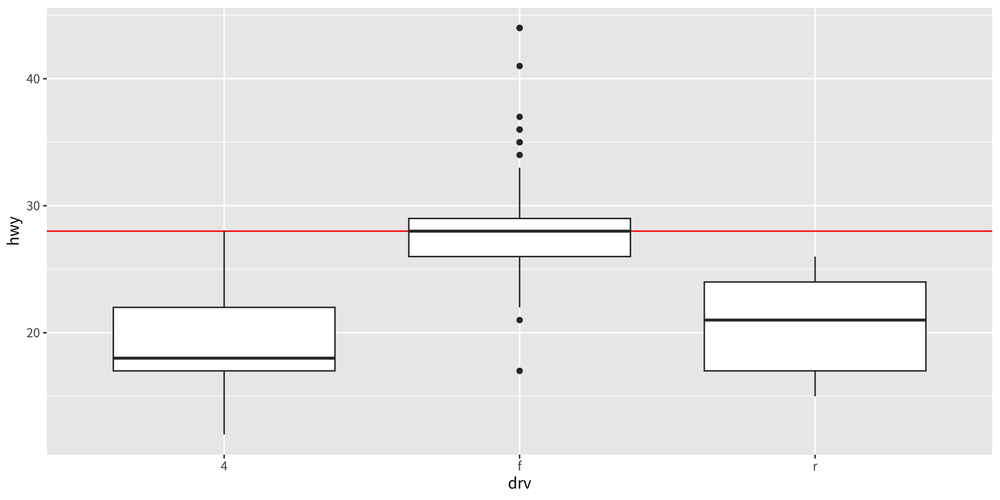
比較限制可見範圍的兩種方法：
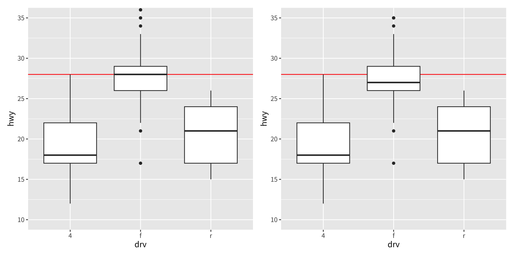
左圖安全地放大。右圖則在被截斷的樣本上無聲地重新計算了盒鬚圖，把中位數往下移。當意圖純粹是視覺上的放大時，務必使用 coord_cartesian()。
視覺範圍擴展
預設情況下，ggplot2 會在資料界限之外加上一個小緩衝，使所繪物件不會與軸線相撞。這個緩衝透過 expand 引數控制，它接受一個 expansion() 呼叫。
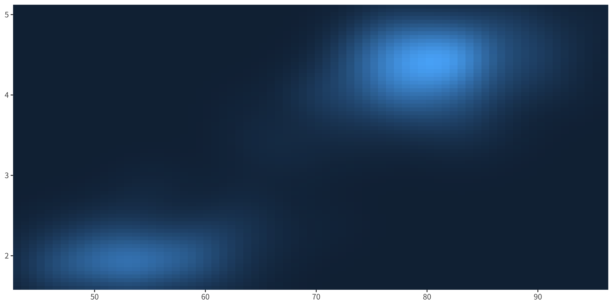
expansion() 接受兩個引數：
add——以資料單位表示的固定空間量（與變數同尺度）mult——相對於完整軸範圍的比例量
兩者都可為長度 1（對稱）或長度 2（不對稱：下、上）。
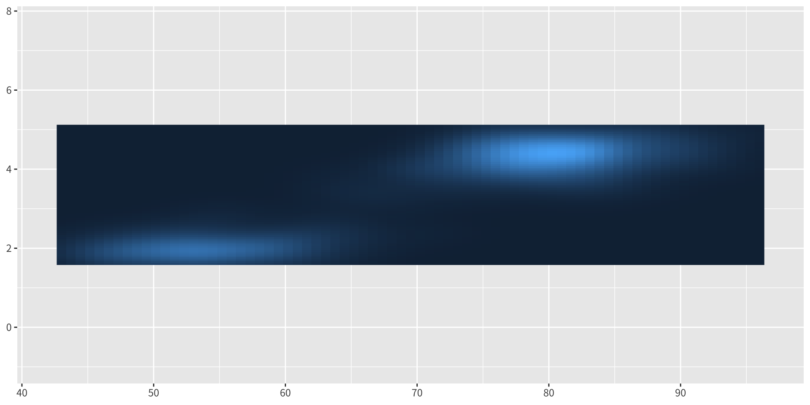
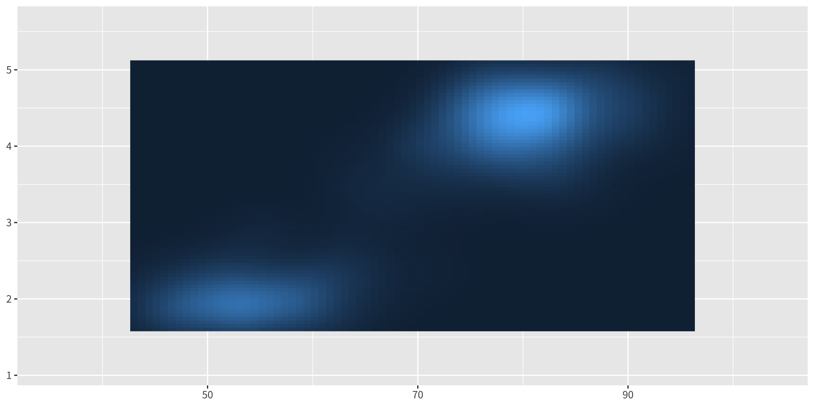
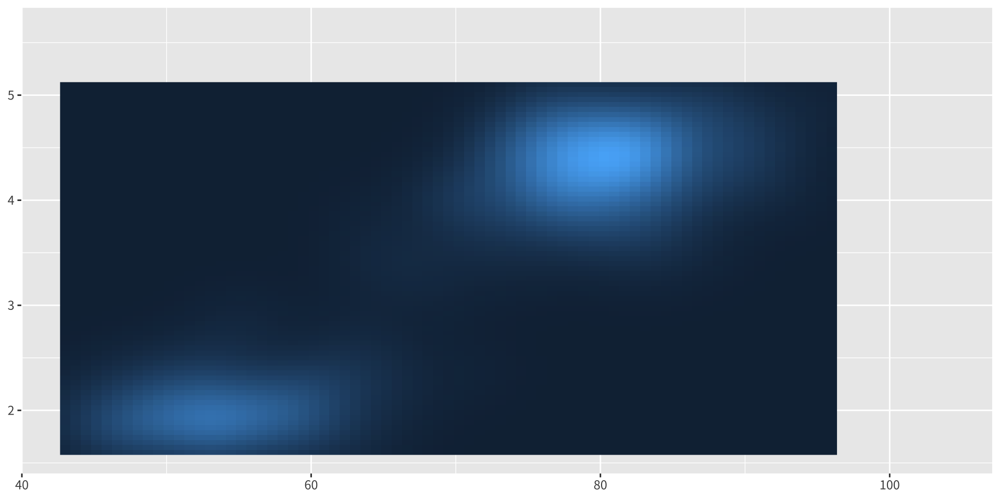
刻度
ggplot2 中的軸刻度標記是尺度刻度（scale breaks）的一個特例。它們的位置透過相關尺度函式的 breaks 引數設定。
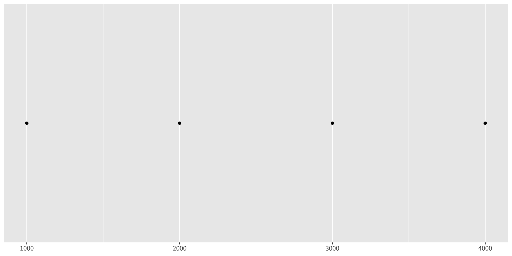
設定 breaks = NULL 會移除刻度標記以及相關的主格線。
手動指定一個刻度位置的向量，會同時移動主格線與位於它們之間的次格線：
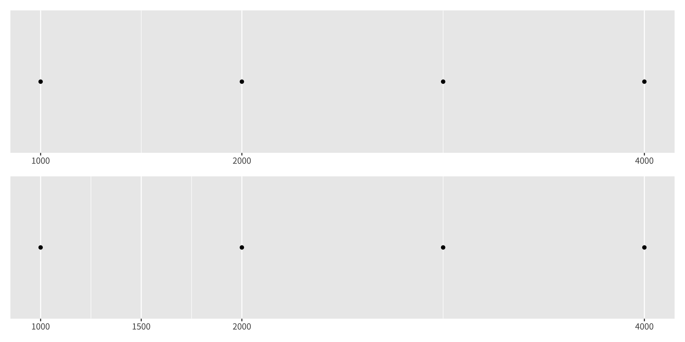
breaks 引數也接受一個函式，它接收尺度的界限並回傳刻度位置。scales 套件提供數個現成的刻度函式：
| 函式 | 說明 |
|---|---|
scales::breaks_extended() |
自動的「漂亮」刻度（ggplot2 預設） |
scales::breaks_log() |
適合對數轉換軸的刻度 |
scales::breaks_pretty() |
為日期時間設計的美觀刻度 |
scales::breaks_width() |
以固定寬度等距的刻度 |
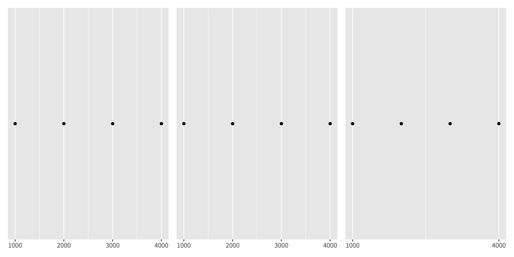
breaks_width() 以固定間隔放置刻度。一個選用的 offset 把所有刻度移動一個固定量：
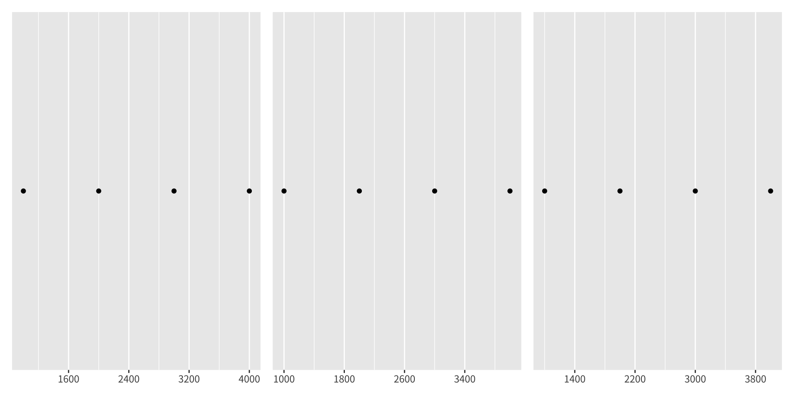
請注意，正的 offset 把所有刻度位置往上移，而負的 offset 把它們往下移。
次刻度
次刻度是出現在有標籤主刻度之間、淡淡的、無標籤的格線。它們透過 minor_breaks 引數設定，該引數同樣接受一個數值向量或函式。
次刻度在對數轉換軸上特別有資訊性，因為它們提供了間距非線性的清楚視覺提示：
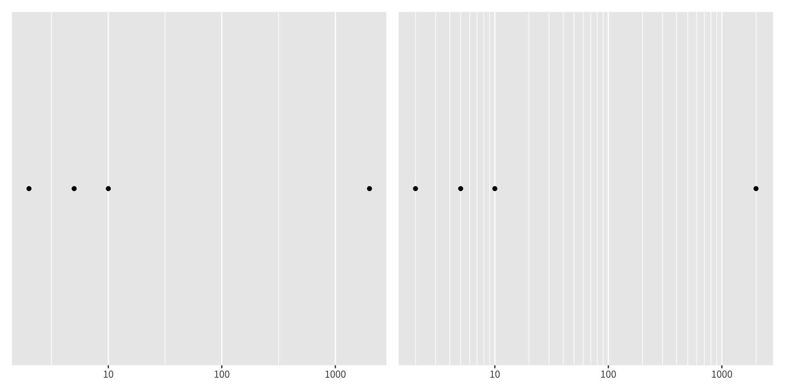
scales 套件也提供 scales::minor_breaks_n() 與 scales::minor_breaks_width() 作為以函式為基礎的替代。
標籤
每一個刻度都有一個相關聯的文字標籤。標籤由 labels 引數控制，它接受一個字元向量（每刻度一個標籤）或一個標示函式。
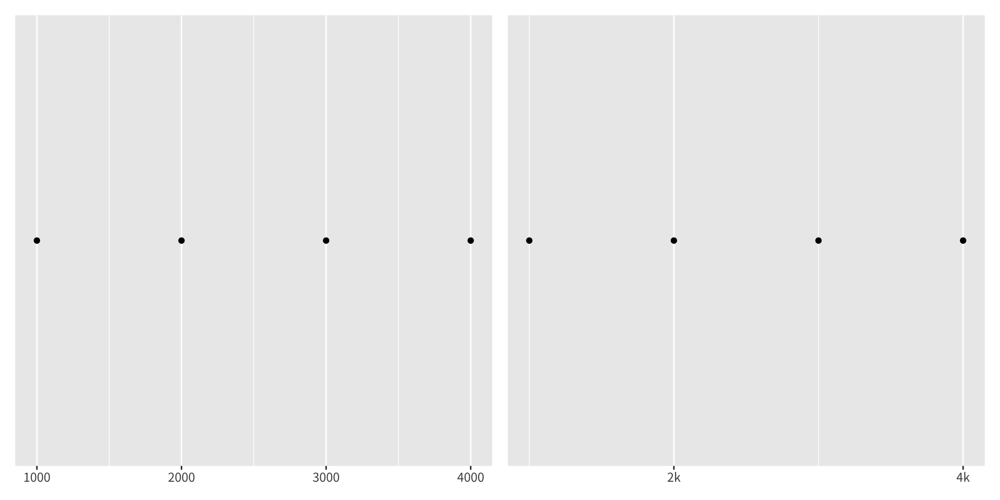
scales 套件提供一系列現成的標籤格式器：
| 函式 | 輸出範例 |
|---|---|
scales::label_bytes() |
1.5 kB、2.3 MB |
scales::label_comma() |
1,000 |
scales::label_dollar() |
$1,000 |
scales::label_ordinal() |
1st、2nd、3rd |
scales::label_percent() |
10% |
scales::label_pvalue() |
<.05、.34 |
base_lbl2 <- ggplot(toy, aes(big, const)) +
geom_point() +
labs(x = NULL, y = NULL) +
scale_x_continuous(breaks = NULL)
p_pct <- base_lbl2 + scale_y_continuous(labels = scales::label_percent())
p_eur <- base_lbl2 + scale_y_continuous(
labels = scales::label_dollar(prefix = "", suffix = "€")
)
p_pct | p_eur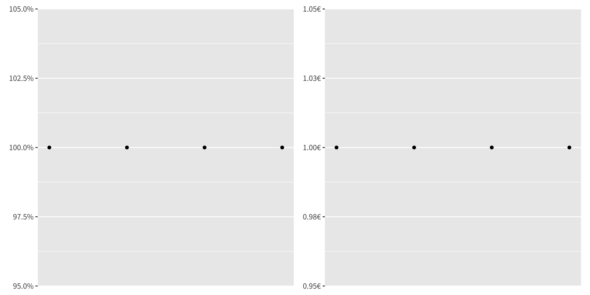
設定 breaks = NULL 與 labels = NULL 之間有一個重要的差別：
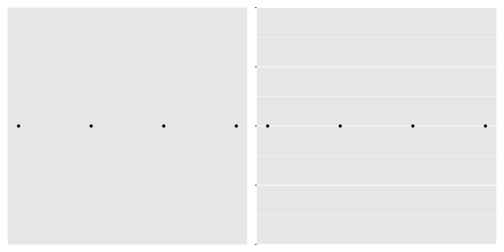
breaks = NULL同時移除刻度標記與主格線。labels = NULL只隱藏文字標籤，而保留刻度與格線。
轉換
預設情況下，連續位置尺度使用恆等（線性）轉換。覆寫這點是透過 trans 引數來做，它接受一個轉換名稱（字串）或一個來自 scales 套件的轉換器物件。
諸如 scale_x_log10()、scale_x_reverse() 與 scale_x_sqrt() 的便利包裝函式涵蓋了最常見的情況：
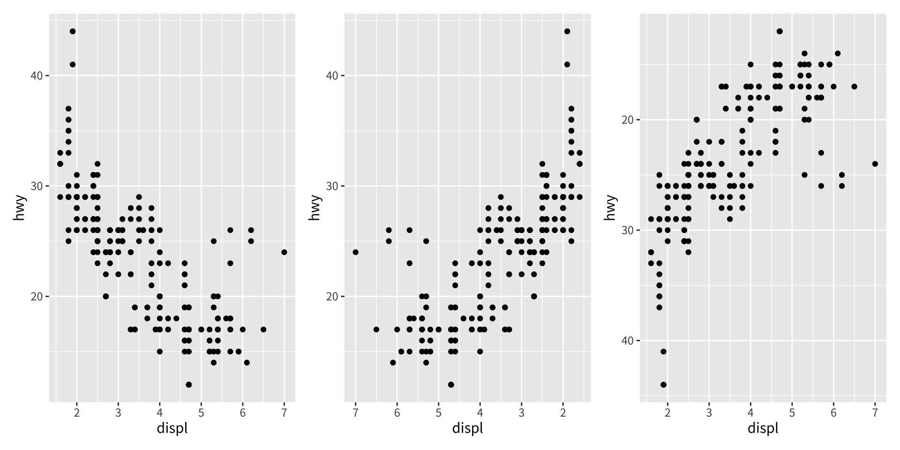
對於較不常見的轉換，直接使用 trans 引數：
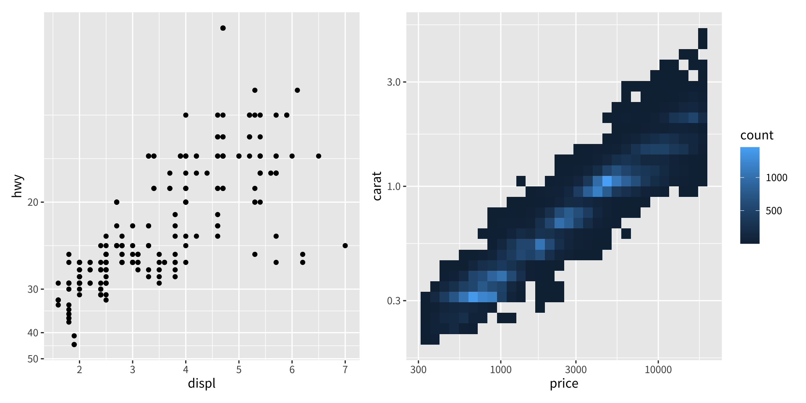
scales 套件所提供的內建轉換完整清單：
| 名稱 | 函式 \(f(x)\) | 反函式 \(f^{-1}(x)\) |
|---|---|---|
"asn" |
\(\tanh^{-1}(x)\) | \(\tanh(y)\) |
"exp" |
\(e^x\) | \(\log(y)\) |
"identity" |
\(x\) | \(y\) |
"log" |
\(\log(x)\) | \(e^y\) |
"log10" |
\(\log_{10}(x)\) | \(10^y\) |
"log2" |
\(\log_2(x)\) | \(2^y\) |
"logit" |
\(\log\!\left(\frac{x}{1-x}\right)\) | \(\frac{1}{1+e^y}\) |
"probit" |
\(\Phi(x)\) | \(\Phi^{-1}(y)\) |
"reciprocal" |
\(x^{-1}\) | \(y^{-1}\) |
"reverse" |
\(-x\) | \(-y\) |
"sqrt" |
\(x^{1/2}\) | \(y^2\) |
你也可以直接呼叫轉換器物件——以下兩種寫法是等價的：
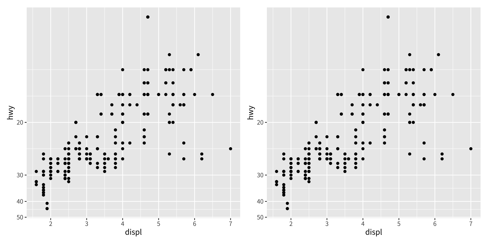
同樣地，便利包裝函式與明確的 trans 引數可互換：
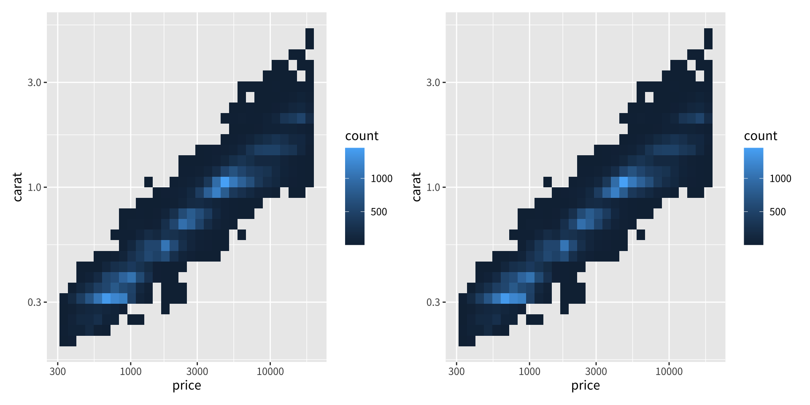
轉換尺度 vs. 轉換資料
一個重要的微妙之處：轉換尺度與直接轉換資料變數是不同的。
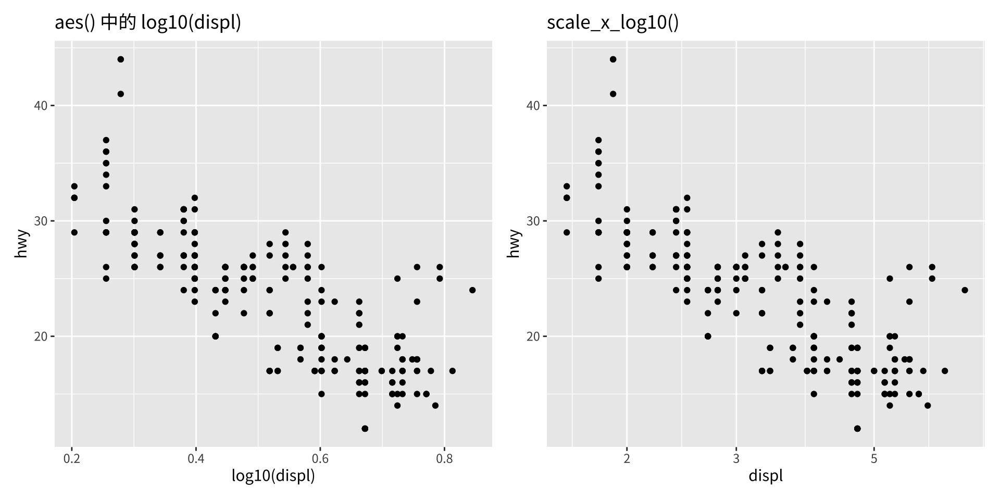
在兩種情況下，統計幾何都相同，但軸刻度標籤不同。轉換尺度（右）會在刻度上顯示原始資料值，這通常更易詮釋。重要的是，在兩種方法中，轉換都發生在任何統計摘要之前——如果需要在統計之後轉換，請使用 coord_trans()。
日期時間位置尺度
日期時間位置尺度
當一個日期或日期時間變數被映射到 x 或 y 時，ggplot2 自動選擇 scale_x_date() 或 scale_x_datetime() 作為預設尺度。這些尺度以對日期友善的引數擴展了連續尺度框架，以控制刻度與標籤。
支援的 R 日期／時間類別包括：
Date——日曆日期（基礎 R）POSIXct——日期時間值（基礎 R）hms——一天中的時刻值（hms 套件）
在繪圖前，用 as.Date()、as.POSIXct() 或 hms::as_hms() 把字元字串轉換成適當的類別。
日期尺度的刻度
date_breaks 引數用人類可讀的日期單位定位刻度標記："years"、"months"、"weeks"、"days"、"hours"、"minutes" 或 "seconds"。數字前綴設定間隔大小。
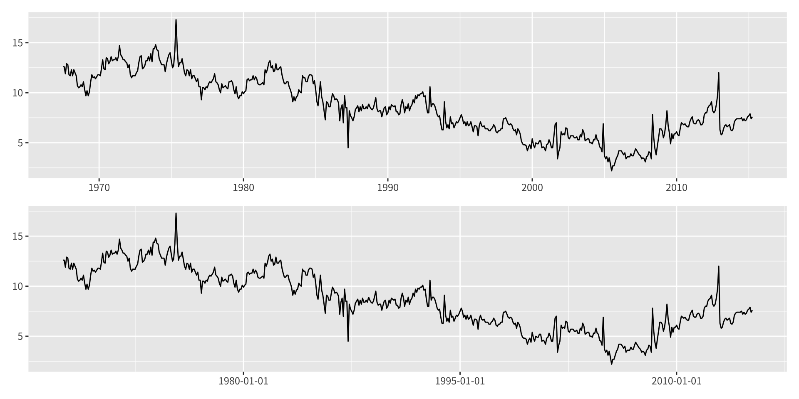
date_breaks = "15 years" 是 breaks = scales::breaks_width("15 years") 的簡寫。使用較長的形式可存取 offset 引數：
日期尺度的次刻度
date_minor_breaks 引數控制次刻度間距的方式，與 date_breaks 控制主刻度間距的方式完全相同。
df <- data.frame(y = as.Date(c("2022-01-01", "2022-04-01")))
base_d <- ggplot(df, aes(y = y)) +
labs(y = NULL) +
theme_minimal() +
theme(
panel.grid.major = element_line(colour = "black"),
panel.grid.minor = element_line(colour = "grey50")
)
p_maj <- base_d + scale_y_date(date_breaks = "1 month")
p_min <- base_d + scale_y_date(
date_breaks = "1 month",
date_minor_breaks = "1 week"
)
p_maj | p_min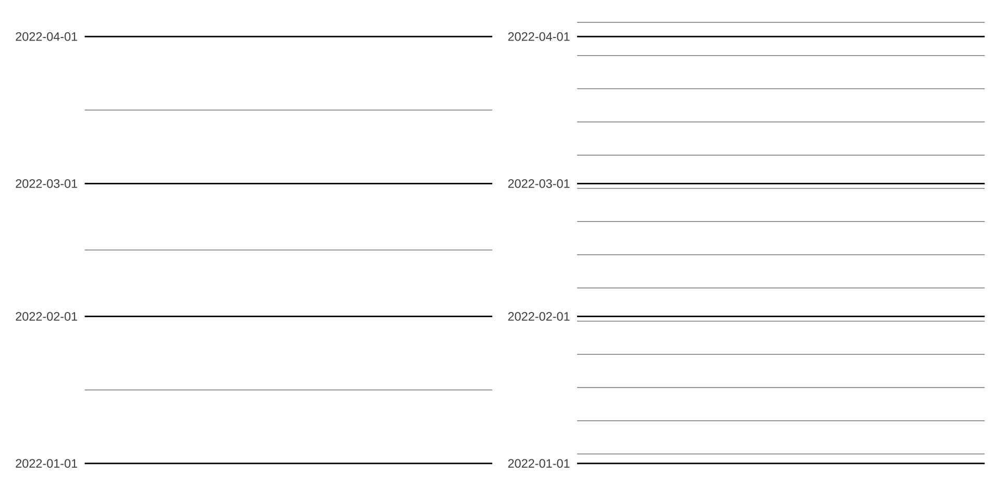
由於月份長度不一，次刻度（恰好相隔 7 天）會在每個月內產生略微不均的間距。
日期尺度的標籤
日期刻度標籤用 date_labels 引數格式化，它接受 strptime 風格的格式字串。
| 字串 | 意義 |
|---|---|
%S |
秒（00–59） |
%M |
分（00–59） |
%H |
時，24 小時制（00–23） |
%a / %A |
縮寫／完整的星期名稱 |
%d |
月中日（01–31） |
%m |
月，數字（01–12） |
%b / %B |
縮寫／完整的月份名稱 |
%y / %Y |
不含／含世紀的年份 |
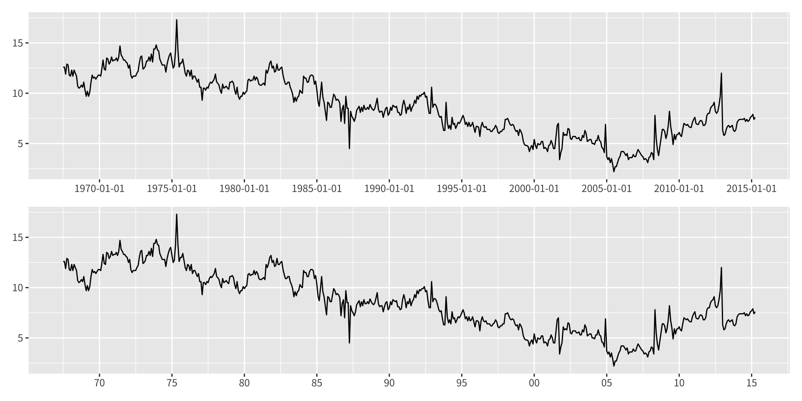
換行字元 \n 可嵌入格式字串中，把標籤的各個成分跨多行堆疊，減少水平方向的擁擠：
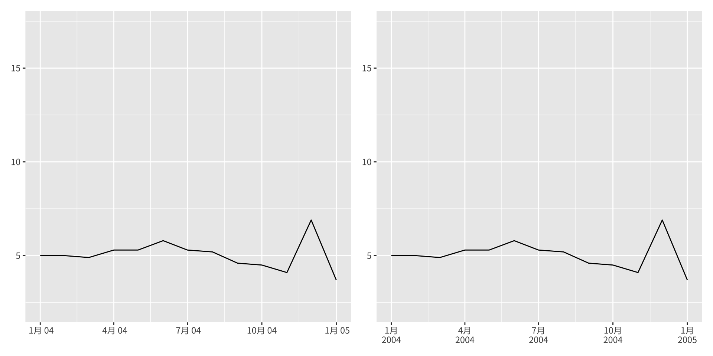
date_labels 的一個替代是把一個標示函式傳給 labels 引數。scales::label_date_short() 函式特別有用：它會自動縮減標籤，使重複的資訊（例如年份）在每個序列中只印一次，減少視覺雜亂：
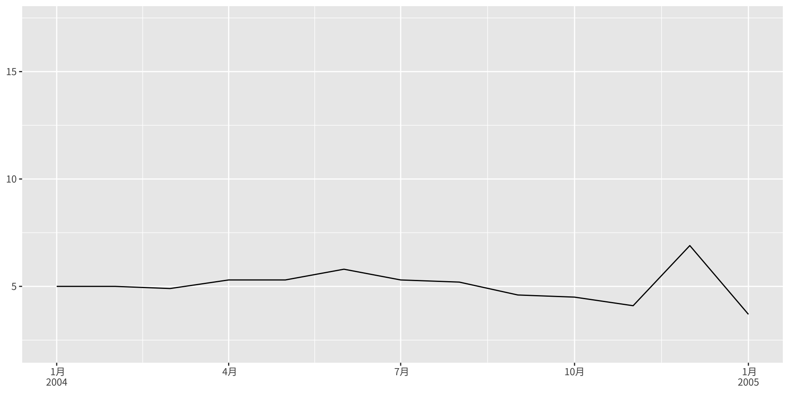
離散位置尺度
離散位置尺度
當一個類別（因子或字元）變數被映射到 x 或 y 時，ggplot2 自動選擇 scale_x_discrete() 或 scale_y_discrete()。在內部，每個類別都被指派一個整數位置，這讓所有與寬度相關的參數（長條寬度、抖動高度等）都能以每類別單位區間的比例來指定。
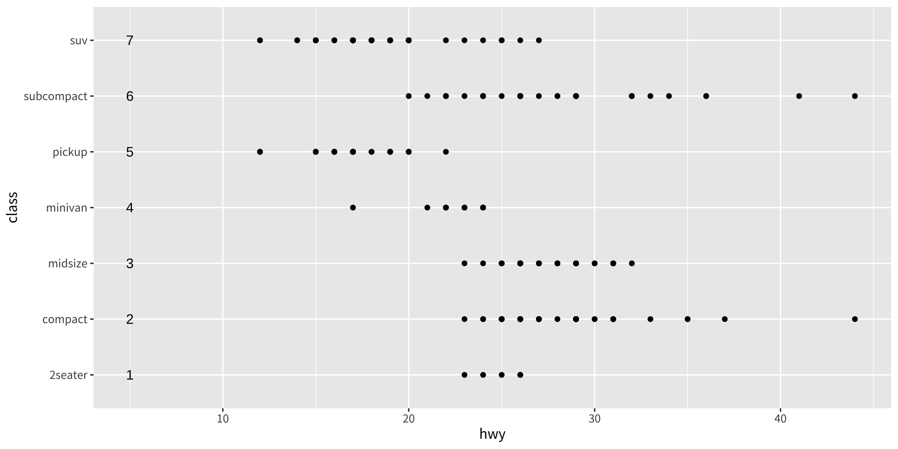
由於每個類別在離散尺度上占據單位寬度，在 geom_jitter() 中設定 height = .25 會產生橫跨類別箱 ±0.25 的抖動：
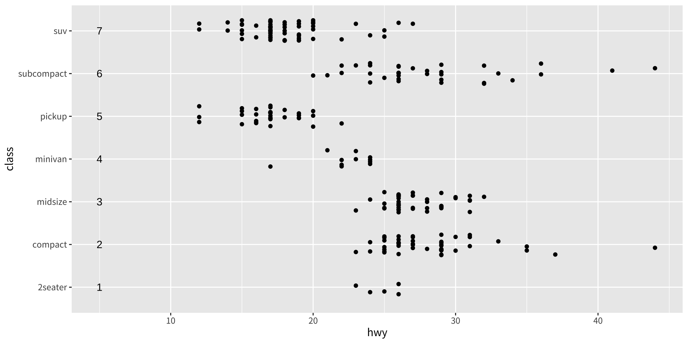
相同的邏輯支配 geom_boxplot() 中的盒寬：width = .4 為盒子保留類別槽位的 40%。
範圍界限、刻度與標籤
對於離散尺度，limits 定義的是完整、有序的可允許值集合（而非端點）。資料中存在但不在 limits 中的值會被無聲地捨棄；在 limits 中但資料中不存在的值會建立空白位置。
base_disc <- ggplot(toy, aes(const, txt)) +
geom_label(aes(label = txt)) +
scale_x_continuous(breaks = NULL) +
labs(x = NULL, y = NULL)
p_extra <- base_disc + scale_y_discrete(limits = c("a", "b", "c", "d", "e"))
p_reord <- base_disc + scale_y_discrete(limits = c("d", "c", "a", "b"))
base_disc | p_extra | p_reord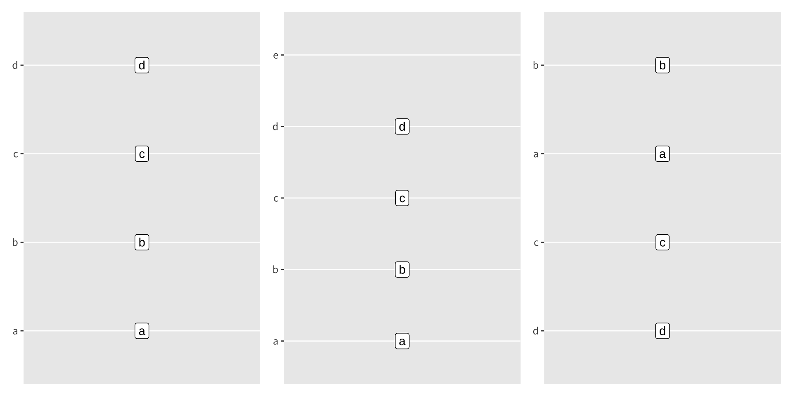
breaks 引數選擇哪些值得到軸標籤；labels 用一個具名字元向量把特定值映射到自訂的顯示字串——而不擾動順序或刻度集合：
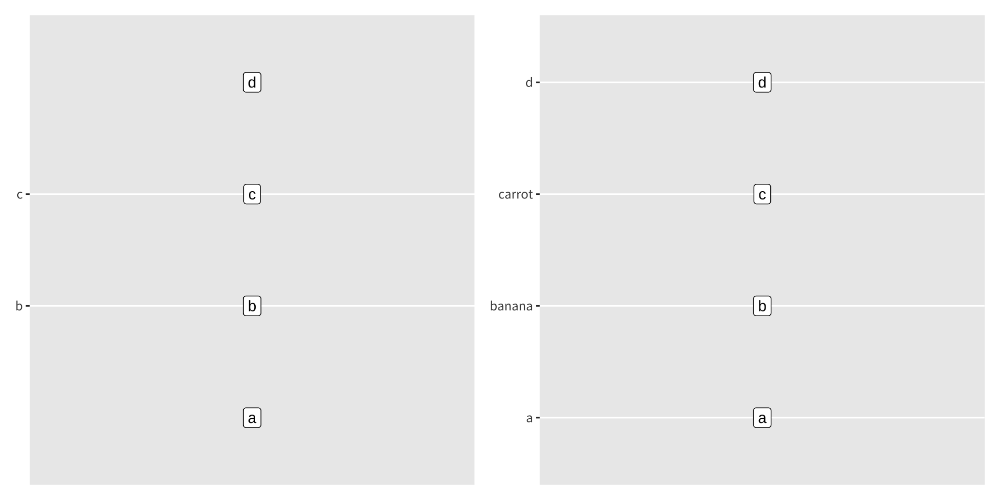
scales::label_wrap() 函式對長類別名稱很有用——它會自動把文字在指定的字元寬度內折成多行。
標籤位置
軸標籤重疊是類別資料的一個常見問題。guides() 函式與 guide_axis() 對標籤放置給予精確的控制：
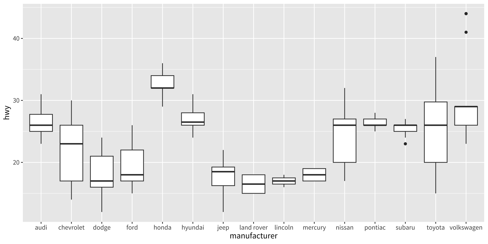
兩個有效的補救是錯位（把標籤錯開到多列）與旋轉：
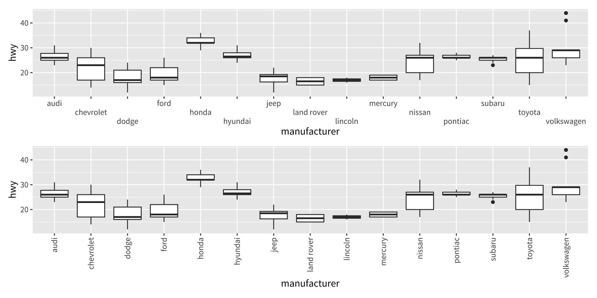
guides() 是一個簡寫：等價的長形式把 guide 直接傳進尺度函式內。
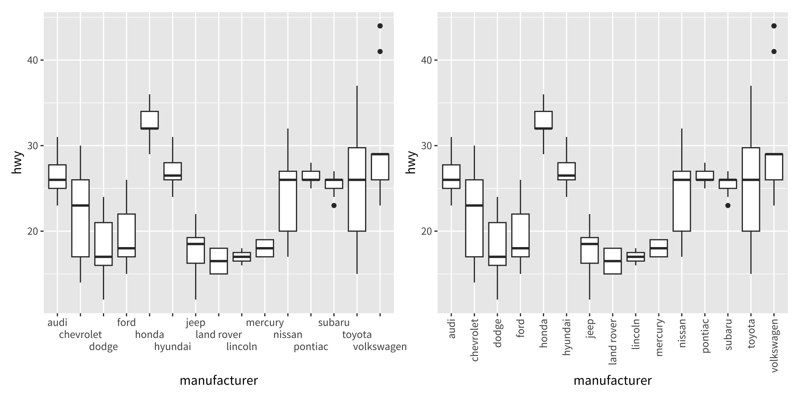
分箱位置尺度
分箱位置尺度
分箱位置尺度占據連續與離散尺度之間的空間。它們把一個連續變數切成等距的箱，然後把每個箱當作一個離散類別。主要的函式是 scale_x_binned()（與 scale_y_binned()）。
最熟悉的應用是類直方圖的圖。下面的例子示範 geom_bar() 結合 scale_x_binned() 如何近似 geom_histogram()：
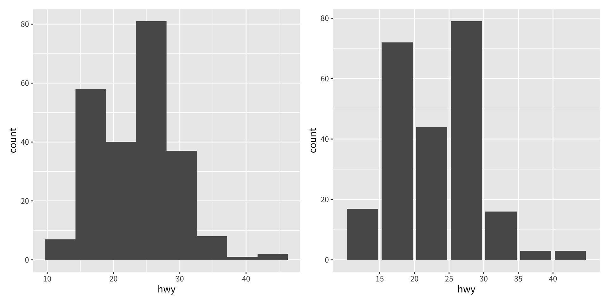
一個更實用的應用是把 scale_x_binned() 與 geom_count() 搭配。沒有分箱，對連續資料用 geom_count() 會產生過度擁擠的圖，因為每一對相異的座標都會得到自己的點：
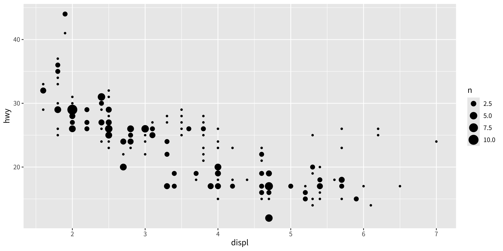
在兩軸都加上分箱尺度，會把鄰近的點分組到離散的儲存格中，產生一個可讀得多的摘要：
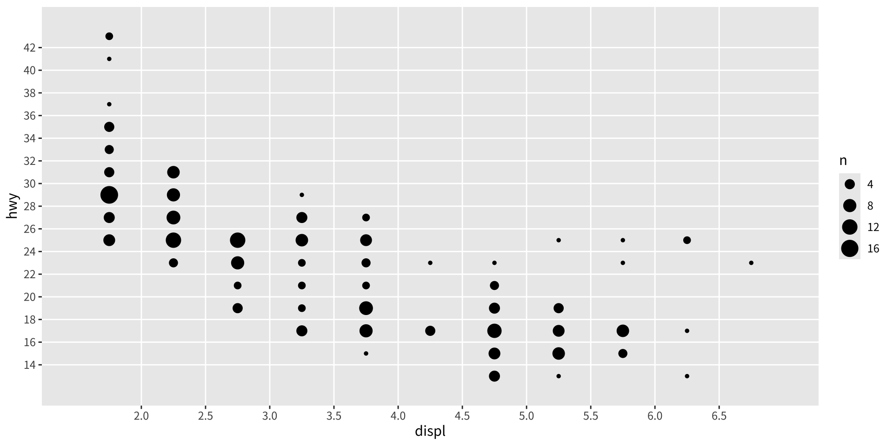
n.breaks 引數控制切點的數目。非位置美學（顏色、大小等）的分箱尺度在 §11.4 與 §12.1.2 討論。
練習
用
scale_x_continuous()，以兩種方式把ggplot(mpg, aes(displ, hwy)) + geom_point()圖的 x 軸限制在 2–5 的範圍：(a) 透過limits，以及 (b) 透過coord_cartesian()。描述兩者行為上的差異。建立一張
economics$psavert對date的時間序列折線圖。把主刻度設為每 10 年、次刻度設為每 2 年。把標籤格式化為只顯示兩位數的年份。用
mpg資料集，製作一張依manufacturer的hwy盒鬚圖。套用guide_axis(angle = 45)使 x 軸標籤可讀。為什麼
scale_x_log10()產生的軸刻度標籤與aes(x = log10(displ))不同？在什麼情況下你會偏好各自的做法？用
scale_x_binned()搭配geom_count()，把mpg資料集中cty與hwy的聯合分布視覺化。實驗不同的n.breaks值。
版權聲明
版權聲明。 本教材改編自 ggplot2: Elegant Graphics for Data Analysis (3e)。所有權利均由原作者與出版者保留。
僅供非商業用途。 本教材嚴格限定用於教育目的，不得用於商業獲利。
適當標註出處。 任何對本教材的重製、散布或使用，都必須適當標註原始出處。

ggplot2: Elegant Graphics for Data Analysis